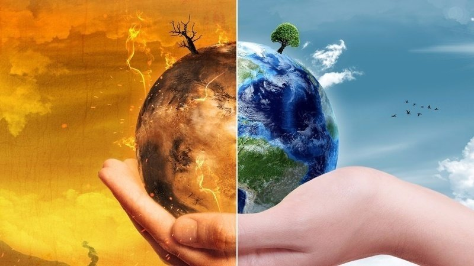

POLLUTION AND POLLUTION CONTROL

1. Pollution is the introduction of substances or energy (such as light or
heat) into the natural environment in amounts or concentrations that
can be harmful for humans, animals, and plants.
2. Pollution can reduce the health of ecosystems by harming or even causing
death to the living things that call those ecosystems home. The negative
effects of pollution can range in severity depending on what the pollutant
is, the characteristics of the pollutant, and where the pollutant is located.
3. Pollution is most often composed of synthetic, or human-made substances
(like plastic, for example), although even natural substances like sediment,
nutrients, and carbon dioxide can become pollutants when they exceed a
particular level. If natural substances exceed healthy levels, however, it is
very likely the result of human activities.
4. The way in which pollution is categorized, studied, and managed depends
on what Earth system is affected. Parts of Earth’s systems that can be
affected by pollution include land, waterways (such as ground-water,
rivers, lakes, bays, and oceans), air, and climate.
There are mainly four types of pollution shown:
There also has many ways of prevention of all these pollution.